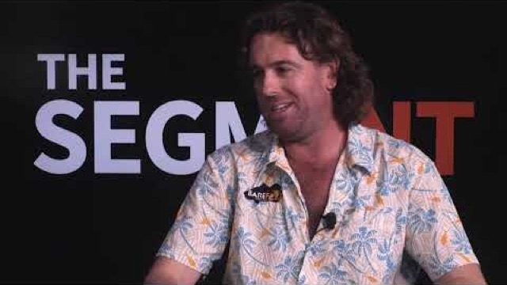

Originally broadcast on The SegmeNT. Watch on The SegmeNT.
Read the full transcript (3,638 words)
This week is a great show on the segment, we have Mr. Glenn Watt from Barefoot Fishing Safaris. Great show. He's a local fishing guide, great Northern territory business. Welcome to the show, Glenn.
Thanks, Chris. Mate, that was a bit more official. So tell us a story you went from working on Tipperary Station to being a fishing guide, mate. Obviously that was a bit of a transition. Yeah, a lot of people sort of see it as 2 very different worlds, but fishing is a big part of working on Tipperary Station.
You might know the Daily River runs clean straight through the middle of it. So I guess people that work there and anywhere around the northern territory probably use the, you know, the work side of it as a front for actually going fishing a lot. So for me, it was, yeah, it was a big transition into something that I've never done before until now, but at the same time, the same sort of skills as working in a team on a fishing, on a cattle station, they transpose across to being a fishing guy where it's about sort of looking after each other, helping each other out and all getting the job done together. So let's talk, let's talk about fishing.
So obviously you've growing up as a kid and you love fishing. I guess you wouldn't be doing your job if you didn't love fishing. No, that's right. You can't do this job unless you love it and you've got to continue to love it.
Once you stop, that's when you've got to stop, you know? You've got to wake up every morning at 4 o'clock in the morning, keen to keen to go fishing again. So let's give people a really good idea of what a fishing guide's life is, all right? So I've got a couple of mates.
that are all being fishing guys, and I tell you what, tell me, give me the idea of average what a fishing guide has to do day in and day out when the season's on. Yeah, it varies a little bit, but basically my day, at this time of year, we're doing a lot of one day and half day stuff. So let's start at the start of the day and I'll wake up bright-eyed and bushy-tailed at 4 o'clock in the morning. And usually in town by 5 to pick up clients from their hotels, we run around all the different hotels, pick the guys up, head out to wherever we might be going, could be Shady Camp, corroborate Dundee, wherever. We stopped for breakfast on the way, which is usually all part of the tour, you know, where I explained to them about national parks, we're driving through and all sorts of things.
So you're on song from 5 o'clock in the morning. We fish through till on a day trip through until about 2 o'clock. And then off the water and same thing, tour guide home, and we often stop at a few pubs on the way and show them Humpty-Doo Tavern and those sorts of things. Get them back to town, hopefully by five.
Fuel up the car, fuel up the boat, wash the boat, wash myself, eskies, lunch boxes, repack all the lunches, ring tomorrow's group of new best friends, and try and get to bed by 830 and do it all again. So try and kiss your kids good night. Yeah, spend a bit of time with the kids is something that sort of is squished in around, all that stuff, and it's one of the beauties of working for yourself, I guess, is that I do all my boat washing and all that sort of stuff at home, so I get home straight onto the lawn and the kids are there and we have our play and I'll put their kids to bed and that sort of thing as well. It's one of the main reasons I sort of chose this path, I suppose, is a lifestyle, and if it starts taking away time from family, that's when you got to reevaluate things.
for sure. So, tell me, taking clients, most of your clients from down south, I imagine. Yeah, probably 90% of them... So how you going at the moment?
Obviously, all the borders are shut. You surviving? We're surviving thanks to things like job keeper allowance. I am lucky I've got a background, a very varied background in other work, so I've been able to jump back into driving trucks and going out to mind sites again as well.
But the guiding side of things is non-existent until, you know, actually, as borders open, we start to get a bit of inner state stuff and the territory tourism vouchers of being good for getting a few local bookings as well. Yeah, good. Yeah, I start doing them this weekend. Yeah good. So tell me this.
Obviously, coming to the northern territory catching a Barramundi is one of the iconic things that you do. And obviously, seeing a crocodile is the other iconic thing. So they're 2 of the main things that people come up to the territory and either want to do or want to see. So when you take people out on boats for the 1st time. Do they get freaked out by crocs?
Because I made you, everywhere you go, you got crocs. Yeah, well, it's funny. People do think that everywhere you go, you see crocs, particularly the half day stuff we do in Darwin Harbour and you rarely see them there. I mean, they're definitely there.
They will chew your crab pots up if you leave them in overnight, as you would know, but we rarely see them there. Best places I take people for crocodiles, Crobbery, Billabong, and Dundee. But yeah, they're often, I guess, hesitant, but I just, it's all about the education process. You got to be crock wise, you know, and just not take it for granted.
We give them healthy respect and take their photo and then move on. The one thing I've known or realised is the best fishing guys are almost great advocates for the northern territory. They don't just catch them a fish. They become their best mates.
And I think that's something I've just learned and having a chat to you is, are you really, really love the northern territory and you really enjoy seeing your clients have a great time. Yeah, after taking these guys out fishing for the last 6 or 7 years, you get to this area where they're coming up every year and they're your mates, but you still send them an invoice, you know? So, like, every year you're sort of waiting for him to say, oh, we're good enough, mates now, aren't we? Why don't all just come up?
We'll go halves in the fuel or whatever, yeah. And that's one of the best things of it, is that I've got really good mates through fishing all over the country and, you know, some international as well, because that's, yeah, for me, it's a big part of it. So tell me this, did you think, did that whole $1000000 fish campaign, did you find a boost? Was that a great thing for the territory?
Yeah, yeah, I think we definitely saw a spike in bookings on the 1st season. Since then, it's definitely dwindled and the numbers will reflect that, the registrations. I would like to see it ran over the dry season when tourism, when tourists are here, get the tourists actually catching the fish. Make, make a 1000 fish at $1,000.
So there's a real vibe about it. They're actually getting caught on fishing charters. There hasn't been one tourist actually catch one at the moment, which is a real shame, but it's good for the locals. There's a few blokes down at Daily River.
I've caught 3 of them, you know, so they're going all right out of it. But yeah, I'd like to see, I'd like to see it move to the dry season and give us a bit of a break over the wet season, do our maintenance myself. Now, look, I don't want to talk myself up too much, but, you know, do consider myself a local fisho with lots of lures, not a lot of fish. Sorry, I'm a great boater.
Yeah, yeah. So I got some lures here. Tell me what if you were going to go out in the in the harbour and for a novice. Any of these catch a fish? What would they do?
Hold these up and shadow. So there is a few there. These lines are probably, they probably are a bit big for Darwin Harbour. Darwin Harbour, particularly, just because it's got gets a bit more pressure.
The bait size generally a bit smaller. But the shallow water diving hard body, like those guys there, that looks like a KO to me, anything that shallow water under a metre dive, tight action, and very buoyant to sort of float you up over the snags, or if you go the other way into the soft plastics, a prawn, rigged weedless, or a paddle tail, rigged weedless, the wedge tails are actually fishing really well in Dalen Harbour these days. and wound slowly along the bottom, just imitating what a prawn does when it crawls along. Yeah, I can't tell you... You're not gonna tell me too many here.
Yeah, no. But genuinely, the guys head down to their fishing local fishing tackle shop, they do have a chance of catching a fishing harbour. Oh, absolutely. Yeah, I mean, on the right tide with the right stuff in the right place and the right guy on the end of the rod, you can go and catch, you know, you can catch 20 Baron a day in Darwin Harbour.
But regularly on the charters. We're catching 2 or three, you know, in a 4 hour session with novices. So, yeah, there's luck involved. That's amazing because the amount of times I hear, you know, just in sitting around, oh, Darwin Harvard's fished out.
fished out, it's fished out. Now it's probably the person driving the boat. Yeah. So is it the lure plays a big part of it, but it's not everything? Uh, yeah, Lua is probably, um, you know, 3rd or 4th down the list of importance for me.
Number one for anywhere is tides, and then what you're doing at the different stages of the tide, the wind, water clarity, if there's actually any bait fish there to draw Barramundi in. And then once you get, say, those 5 things sorted out, which only takes you 20 years, then you can go to which Lewis you should be using. And here's my video series of my books. Well, I'm lucky because I've had my 20 years compressed into 200 days a year, you know?
So that's the thing with guiding is that we get schooled up on a lot quicker because we're out there every day, you know? So that's the benefit it's just experience. All right, so let's digress. So Northern Territory is about to go into an election.
You're a small business owner. If you had the opportunity to sort of, you know, if you're sitting with, I guess, the people that are, you know, in charge, what would be your advice that you would love to see as a small business owner change, particularly to your industry, what that you think would be really benefit to the industry? Yeah, major benefit for our industry would be to, I guess, and it's not just to the, to me being a business owner, but recreational fishing in general. For me, I'd just like to see the nets pushed a bit further away from our recreational fishing zones.
Um, they've done, there's been great work done in the past and everyone's grateful for that. But just to remove the pressure of commercial netting just a bit further away from general public interaction, would be really great for us to be able to continuously go to spots within an hour's drive of a boat ramp and have consistency. What you're saying is when, you know, a charter might pay 10,000 bucks for a 4 day trip so that they're actually going to catch fish. Yeah, that's right.
Or you can, it becomes more predictable, you know, like because I'm out all the time, I keep going rotating through a certain number of spots and I know what's going to happen to a certain degree. But if you introduce the unknown, which is all the fish being removed out of that area, it's hard to provide a good service. So, yeah, commercial netting is, you know, it's sustainable, and it's important, and there's people making their living out of it. So, um, they definitely don't need to be shut down, but just I'd like to see them just squeezed out just a little bit further.
Arthur Hamilton from Shorelands is a good mate. They drop those artificial reefs in there. A layman that's not in the industry. I thought that was a fantastic thing for the whole industry at large.
has it been a positive? Oh, from what I'm hearing, absolutely. I haven't actually fished on them, but particularly the Dundee one. I know is absolutely loaded with fish already.
And that's only in, what, 6 months or less. So, yeah, if we can get more and more funding and projects like that happening, it's only going to be good for the industry because it sort of spreads the load over every other. I guess GPS mark. So, yeah, and those ones that are closer into shore, it's safer and there's a whole craft of benefits.
So one, one, I'll get one more question, then we're going to fire through a sort of a top 10. Has technology changed fishing? Like, I, you know, I'm a little bit partial to enjoying the technology looking like a cockpit, but technology has become a huge part of fishing. Have we gone too far with the technology, but we might have, you know, the $10,000 sound of it.
We still don't understand about the tides. Yeah, well, I mean, that's a journey that everyone goes through. I think, like, we're only at the tip of the technology sort of wedge. I think things are in the next few years going to keep going. Some of the stuff that's coming out these days is extraordinary.
But being able to see the fish, number one, is only, like, it's only one piece of the puzzle, as we know, doesn't mean you can make a meat. But yeah, I'd focus on other things before the technology side of things first. Yeah, which is your tides and your wind and your water clarity bait and that sort of thing. But yeah, for me, I've got the very best technology I can get, mainly because it helps me provide the best service to clients.
I also just like playing with it. But I'm really data driven too. So I like to be able to see see the fish, go back and try and figure them out and catch them. and if they go off the bike, move, find them again, and do it again.
It provides a better experience for clients and I think if you use it in the right way, you can vastly increase you. Okay, good. Well, I'm going to drop you in the hot speed, the hotspot here, mate. So here we go.
10 fast questions to finish up with. What is your favourite barralure? And I know I'm going to drop every other manufacturer, but you've got to give me, what's one of your favourites? Baraclassics, one of my favourites.
Very versatile lure. You can say a 10 footer, you can fish it from one foot down to 10 feet. I really love the twitch and pause shortcast type stuff that you do with a barrow classic. So that's up there for sure.
Do moon phases, and I've got, you know, I mean, do moon phases really have much to do with catching fish? I mean, this is probably a 1000 page essay, but in your world? That moon phase is everything. for me.
Wow. You'll come back to the next series and we'll give you the tips on that. Engine, boat engine, preferred boat engine. The one that starts every time I go started.
Very good. If you had 60 K to splash on a boat, okay? The missus came and said, here you go, go and buy yourself a brand new boat, barrow fishing. Let's say not blue water, but barrel, what would you do?
If I've got to go down to a local boatyard and buy one. It'd be a Quintrex top ender, hands down. They rod really well. Matt's produced hull.
They just build a good boat. They're very functional. They're made to fish up here. But if I was going to get one built,
It'd be exactly what I'm building right now, which is very exciting for me. Are you going to tell us? Yeah, I am. Aluminium longboat.
So I like a really shallow draft, but nice and long, so it's good in the chop. And of course, to be able to fit a boat out, the way that you've always dreamed of it is pretty lucky. I don't know if I'm going to get an answer here, but favourite fishing area in the NT. Like I say to everyone, I'm anywhere from Boralula to keep River National Park.
Everywhere on its own day. I love it. Beautiful. I expected that anyway.
Favourite fish to catch. For me, personally, sidecasted Barramundi, any day. Clients, Queenfish. Queenfish.
That's amazing because just what, the energy and the... Yeah, people have never experienced the thrill that you get from the style of fishing, number one, that you do for queenfish, but also just how sort of hard they pull and you often have 3 or 4 hooked up at once, and it's chaos, and I sit back and laugh. It's great. Who's better?
Okay, this one's this is a dangerous question. Who's the best client on a boat, a male or a female? The girls, for sure. For obvious reasons, you're a male, but is there any other reason?
Well, like, girls, listen. Husband and wife, team, the wife always catches more. Good, love it. And best beer on the boat.
Great northern super crisp. There you go. Best fishing night to tie your braid onto your leader. These days, absolutely, without question, if you do it properly, the FG knot.
If you can't tie it, don't even bother. Okay. And how quickly can you do it? For me, it's not about how quickly I can do it?
It's about how well I do it. Good. Like it. Favourite pub in the NT.
I mean, I like all the pubs, but I really, I really love the vibe and the quirkiness of the railway club. Yes, great, great local pub. And lastly, tell me, what's your favourite fish to eat, mate? My favourite threadfin salmon.
Freddy, the good old Fred Finn. So I must confess, I've been onto your Facebook. I have got a few tips and tricks there, but tell me about, which is pretty cool, the fishing club. Yeah, okay, so Outcast Fishing Club started about this time last year.
Essentially, what it is, is a club you can join up to for a monthly fee, 15 bucks a month, and you go in the draw every month to win lots of different prizes, but the main one is 3 day fishing charter for two. Valued about 6 grand. So I think we've given away over $60,000 worth of fishing charters and other prizes so far. But the idea of it, it really is just to spread the love, the guided fishing industry isn't a cheap thing to be involved in.
So for people who can't afford, say, to come on a charter, they can go in the draw, the odds are going to remain around about one in 10 for you to win a charter every year because as we get more and more members, we're going to increase the number of charters to go on. So you're always going to have good odds. It's pretty cheap and we're going to introduce the charters in a state as well as myself. And it's really just to spread the love, make guided fishing and recreational fishing in general, more accessible to everyone else. And I guess let them share the pleasures and joys we get of doing it every day for a job.
I haven't heard. Is that the that's the 1st time I've ever heard of anything like that? Yeah, it is, as far as I know, it is. Yeah, yep.
It's just given me a way to sort of increase the business as well as increase the love. And where do people sign up or where do they go? So at the moment, you go straight through to the Barefoot Fishing Safaris, Facebook page or website? Outcast fishing clubs are going to have its own website launch within the next month or so, and it'll all be on there.
There'll be forums and all sorts of other online activities to do in there as well as all the cool drawers. Awesome. Mate, being a pleasure having you on. Mate.
I got to confess, I thought I was going to get a few more fishing tips for the harbour.